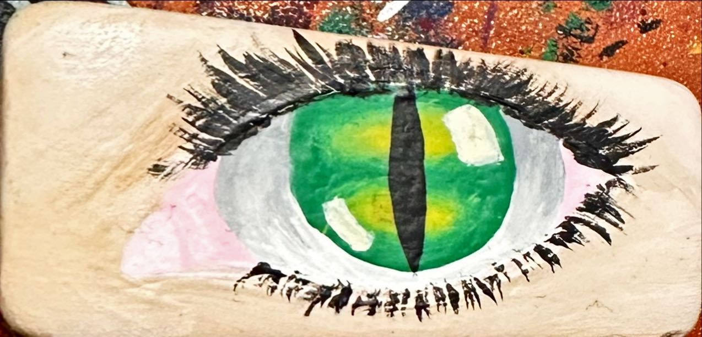

Portfolio information will go here
At the moment I do not have much digital work to share here as part of my portfolio but I do have plenty of artwork that can be seen below
Hobby Art


All of these images were done by me by hand with different mediums such as chalk, paint, pencil or marker. They range in age as some are very recent and some are older and show a great reange of my abilities.
DIGIT 100

This is a project done in my DIGIT 100 class where I mapped the music I listened to for a week. It has an image of the data along with a legend containing the information. The legend explains how to read the genre of music, activity done while lsitening, and the image shows the length of the period.